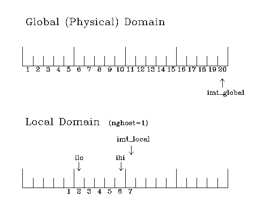

Since ice thickness and thermodynamic variables such as temperature are given in the center of each cell, the grid cells are referred to as "T cells." We also occasionally refer to "U cells," which are centered on the northeast corner of the corresponding T cells and have velocity in the center of each. The velocity components are aligned along grid lines.
In general, the global gridded domain is imt_global x jmt_global, while the subdomains used in the MPI grid decomposition are imt_local x jmt_local. The physical portion of a subdomain is indexed as [ilo:ihi,jlo:jhi], with num_ghost_cells "ghost" cells outside the domain, used for boundary conditions. These parameters are illustrated below in one dimension. The routines global_scatter and global_gather distribute information from the global domain to the local domains and back, respectively. If MPI is not being used for grid decomposition in the ice model, these routines simply adjust the indexing on the global domain to the single, local domain index coordinates. We strongly suggest that the user choose the number of local domains so that the global domain is evenly divided. If the global domain is not evenly divided by the number of processors, then the last subdomain will contain nonphysical points ("padding"). Besides a loss of efficiency due to computing at these points, other problems may arise due to incompatible initializations and spurious data values.
The user has two choices of grid routines: popgrid reads grid lengths and other parameters for a nonuniform grid, and rectgrid creates a regular rectangular grid. The input files global_192x128.grid and global_192x128.kmt contain the <4/3o> POP grid and land mask. These are binary unformatted, direct access files produced on an SGI. If you are using an incompatible architecture, choose rectangular instead of displaced_pole in ice_in.

Grid parameters for a sample one-dimensional, 20-cell global domain decomposed into four local subdomains. Each local domain has one ghost cell on each side, and the physical portion of the local domains are labeled ilo:ihi. The parameter imt_local is the total number of cells in the local domain, including ghost cells, and the same numbering system is applied to each of the four subdomains.
A land mask hm (Mh) is specified in the cell centers, with 0 representing land and 1 representing ocean cells. A corresponding mask uvm (Mu) for velocity and other corner quantities is given by
Mu(i,j)=min{Mh(l),l=(i,j),(i+1,j),(i,j+1),(i+1,j+1)}.Along domain boundaries not masked by land, periodic conditions wrap the domain around the globe. The original boundary routine is bound; the other boundary routines improve parallel performace by not filling all four boundaries when that is unnecessary, and by updating multiple spatial arrays at once. The boundary routines also perform boundary communications between local domains when MPI is in use. Logical masks corresponding to the real masks hm and uvm, tmask and umask respectively, are useful in conditional statements.
In addition to the land masks, two other masks are implemented in evp_prep order to reduce the dynamics component's work on a global grid. At each time step the logical masks ice_tmask and ice_umask are determined from the current ice extent, such that they have the value "true" wherever ice exists. They also include a border of cells around the ice pack for numerical purposes. These masks are used in the dynamics component to prevent unnecessary calculations on grid points where there is no ice. They are not used in the thermodynamics component, so that ice may form in previously ice-free cells. Like the land masks hm and uvm, the ice extent masks ice_tmask and ice_umask are for T cells and U cells, respectively.
Two additional masks are created for the user's convenience: mask_n and mask_s can be used to compute or write data only for the northern or southern hemispheres, respectively.
{kind=link}